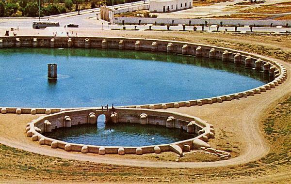
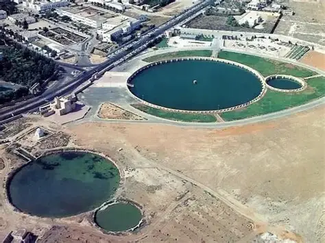

Kairouan n’a aucun fleuve à proximité. Entre 860 et 862, l’émir aghlabide Abu Ibrahim Ahmad fait construire deux immenses bassins pour alimenter la ville en eau.
L’eau de pluie des collines à l’ouest de la ville coule d’abord dans le petit bassin, où les sédiments se déposent. Elle passe ensuite dans le grand bassin, large d’environ 128 m et profond de 4,8 m, qui contient plus de 57 000 m³ d’eau.
Ces deux bassins faisaient partie d’un réseau d’une quinzaine de réservoirs construits autour de Kairouan. Seuls ces deux-là sont parvenus jusqu’à nous. Leurs murs en moellons, recouverts d’un enduit étanche, sont renforcés par des contreforts semi-circulaires.

Au centre du grand bassin, un pilier évoque un ancien pavillon de plaisance des émirs.
